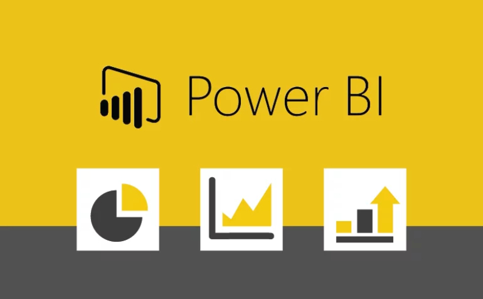
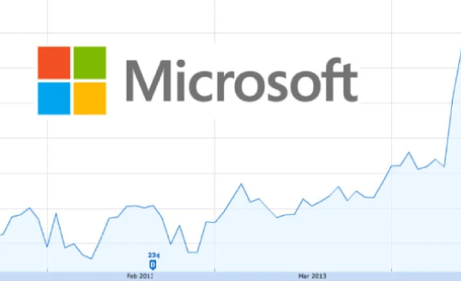

Visualizing data and creating reports is my job and passion! I always like to have a clear view when I am making deicisions in my life.
Therefore, I apply same principle in my reports at work - clarity.
All datasets I used, were downloaded from Kaggle and are publicly available. Every dataset was firstly cleaned in Power Query as needed, and then loaded into Power BI.
My dashboards are created in order to help users have a clear insight, and make a subsequent decision. You can visit them by clicking the image or link below.


In this project I analyzed student test grades using Pandas library. Exploratory data analysis was performed, and some conclusions were defined.
EDA project on roller coaster dataset. I showed interesting facts regarding coasters speed, height, top years in which coasters were introduced etc.

Project was done using Olympics dataset. All 20 interesting questions about history of Olympics were answered and results were interpreted in Power BI.
I analyzed behaviour of clients who churned and I got some insights in order to help the bank improve client retention strategies and decrease churn rate.
Analysis was performed in SQL and results of queries were interpreted in Power BI using Covid dataset as of 16th of February, 2023.

Microsoft stock analysis was completely performed in MS Excel, using advanced data analysis tools. Project was part of DataQuest course.

Basic analysis was performed using all types of SQL queries. Results and findings were graphically reported in Power BI.
Interesting project in analyzing customer behaviour in telecommunication company. It points out which customers are more likely to churn.
Exploratory data analysis project performed on world population dataset. Analysis shows interesting insights of how population changed during time.
Project was part of DataQuest Introduction to Python Programming course. This was my first set to analyze in Python using Pandas.